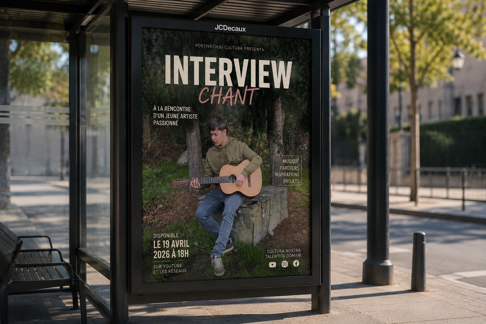

Interview
Audiovisuel

Dans le cadre de ce projet audiovisuel, j'ai réalisé une interview filmée d'un camarade passionné de guitare et de chant. L'objectif était de mettre en valeur sa personnalité et sa passion à travers un format court et engageant.
J'ai pris en charge l'intégralité de la production : le cadrage et la prise de vue lors du tournage, puis le montage vidéo sous Premiere Pro (AC13.04 — Tourner et monter une vidéo). J'ai travaillé la fluidité des coupes, l'équilibre sonore et le rythme général pour produire un rendu propre et professionnel.
Ce projet m'a permis de développer mes compétences en communication audiovisuelle, de la préparation au produit final, en apprenant à gérer à la fois la technique de tournage et les choix narratifs du montage.
Apprentissages Critiques : AC13.04